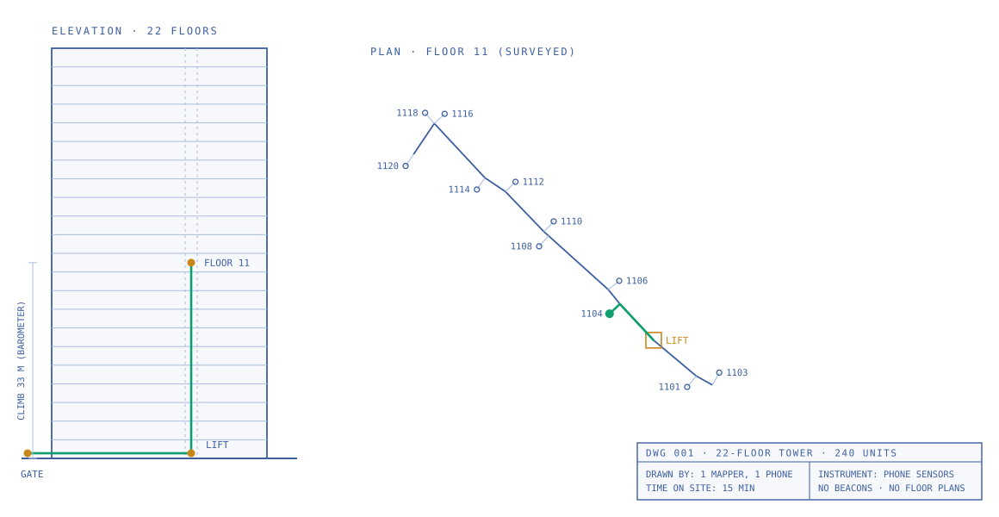

Know where the rider is.
Follow movement through the entrance, elevator, and corridor. Give operations context beyond a GPS pin outside the building.
Know where your rider is inside the building. Understand what’s left of the journey. Give your team a clearer picture of when a delivery will arrive.

Explore the building using the interactive map below.
The last hundred meters.
Now visible to your business.
An arrival at the gate is not a completed delivery. Connect indoor location with the remaining journey to inform estimates, spot delays, and support riders.
Follow movement through the entrance, elevator, and corridor. Give operations context beyond a GPS pin outside the building.
Use the rider’s indoor stage and route to inform delivery estimates. Separate time spent reaching the building from time spent inside.
Turn that same map into clear directions to the right flat. Fewer unknown turns, with better context for the team supporting the delivery.
Bring indoor progress into the operational picture. See where the rider is, how time is being spent, and what remains before the handoff.
Indoor journey
The rider has reached floor 11.
The remaining route is along the corridor.
Enter the building, take the elevator to floor 11, and walk to Flat 1114. Follow the complete first-person journey while your operations team sees each stage.
One mapping walk turns steps, turns, and elevator rides into a connected building map. The same phone sensors power rider positioning and progress along the indoor route.
Your questions, answeredNo beacons, cameras, or building-wide Wi-Fi deployment.
Guidance adapts to available sensors, including on budget Android devices.
Corridors, elevators, and door numbers. Nothing inside a home.
Early field results from the DoorWise team, evaluated against hand-labeled ground truth. We’re building and testing in the places riders actually deliver.
To map a 22-floor tower
Flats in that mapped tower
Median localization error
Turn detection recall
Reported early results across two mapped buildings; performance varies by building and device.
Friends since elementary school in Mumbai. Now building a way through the city’s towers, one corridor at a time.
Sensing, mapping & app
San Jose, California
Field testing & systems
Boston, Massachusetts
No. A mapper walks the building with a normal phone. Its sensors capture steps, turns, floors, and elevator movement to build the map.
Yes. Guidance adapts to the sensors available. On devices without a barometer or gyroscope, the system can use accelerometer-based elevator detection and step-and-compass guidance.
During pilots, through the DoorWise app. Integration into a delivery platform’s existing rider app is the longer-term path.
The team mapped a 22-floor, 240-unit tower in about 15 minutes. Repeating floor layouts reduce the amount of surveying needed; timing depends on the building.
Let’s talk about indoor visibility for your delivery operations.